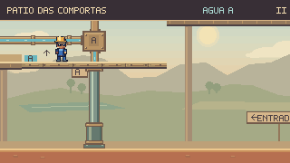
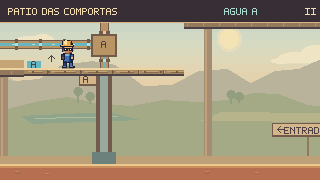

Tubos, pistões
e água em movimento.
Rodada seguinte: Fluxo contínuo, alimentação dos pistões e desvio da pressão.
Conexões com encaixes definidos, metal com volume e apoios ligados às plataformas. Nos Respiros, os reflexos acompanham a subida da água sem saltar ao reiniciar o desenho.


ANTESDEPOISHaste polida, encaixe sob o tablado e cilindro preso à base. O apoio fica no chão enquanto a plataforma sobe e desce.
Peças que se encontram
Curvas recortadas ligam os trechos retos. Abraçadeiras, juntas, parafusos e rebaixos dão forma ao bronze sem cobrir a passagem visível da água.
Apoios coerentes
O encaixe superior acompanha a plataforma real; o cilindro permanece fixo. Na doca, a estrutura fica oculta sob o tablado, sem peças suspensas acima dele.
O fluxo, quadro a quadro
Um trecho do reflexo saltava seis pixels entre dois passos. Agora sobe um pixel por passo, com espaçamento contínuo. A textura parte do bocal fixo, por isso acompanha melhor a água quando sua altura muda.
Medição dos quadros · Conferir os estados de pressão · Examinar os mecanismos


Conferência nos percursos
Entradas de teclado gravadas, física e câmera nativas. Simulação a 60 Hz e captura a 15 quadros por segundo. As comparações acima usam poses preparadas para inspeção.
Conferência desta rodada
887 testes de Guaíra e build aprovados. 56 enquadramentos conferidos e quatro percursos completos sem dano. Os testes preservam a cobertura da água perigosa, os avisos e o movimento reduzido.
As oito fases também passaram por entrada, teclado, pausa e retorno ao mapa no navegador. Nos Respiros, a pausa foi conferida com os jatos em plena descarga.
Cenários e percursos · Detalhes e animação · Navegador · Registro técnico